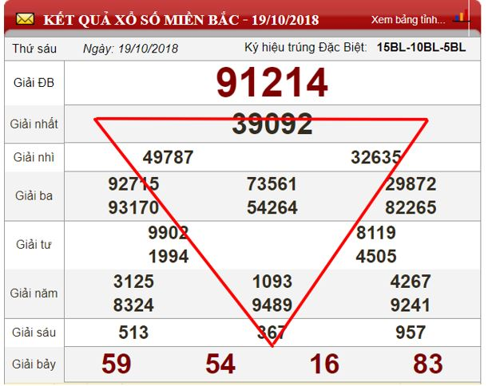
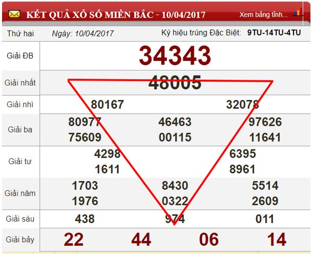
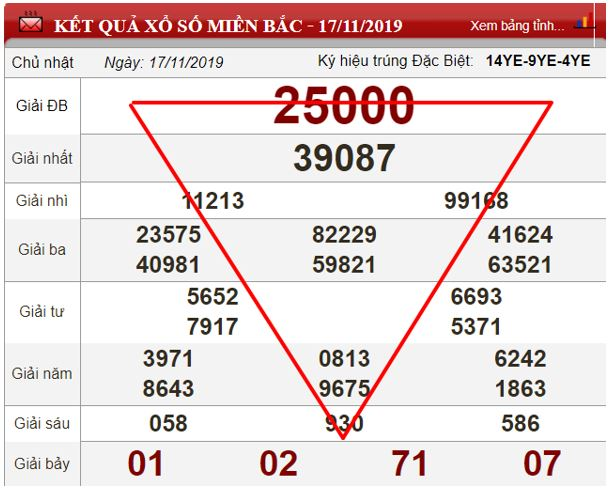

Soi cầu lô tam giác là gì?
Đây là phương pháp được sử dụng thường xuyên khi soi cầu xổ số miền Bắc. Để thực hiện cách soi cầu này, bạn sẽ phải kết hợp những con số ở các bộ giải ở kỳ quay trước lại với nhau để tìm ra bạch thủ lô hôm nay. Việc soi cầu lô tam giác khá đơn giản, không yêu cầu nhiều về mặt kỹ thuật hay tính toàn. Tuy nhiên, để đem lại hiệu quả cao bạn phải là người nhanh nhạy và có khả năng ghi nhớ và đoán biết các số tốt.
Nhờ thế, bạn sẽ nhìn thấy được sự liên quan và khác biệt giữa các con số trong các giải. Từ đó chọn được bạch thủ lô siêu chuẩn giúp thắng lớn. Cách soi cầu tam giác được nhiều người áp dụng nhất thực hiện theo 3 bước như sau:
Theo dõi bảng kết quả xổ số kỳ quay trước. Hướng sự quan tâm đến giải đặc biệt, giải nhất và 6.2.
Loại bỏ những số có liên quan với nhau ở giải nhất và giải đặc biệt. Một con số khác biệt nhất sẽ được giữ lại.
Con số khác biệt duy nhất vừa tìm được sẽ dùng để kết hợp với số đầu và số cuối của giải 6.2. Như vậy sẽ có được bạch thủ lô cực đẹp đánh lớn hôm nay.
Hướng dẫn soi cầu lô tam giác chi tiết
Ví dụ 1: Áp dụng soi cầu xổ số miền Bắc ngày 20/10/2018 dựa vào kết quả XSMB ngày 19/10/2018.

Cần quan tâm đến các giải sau:
Giải đặc biệt với dãy số là: 91214
Giải nhất là: 39092
Giải 6.2 là: 367
Chỉ ra những con số liên quan với nhau và con số khác biệt còn lại ở giải nhất và giải đặc biệt. Cụ thể như sau:
Loại số 9 bởi lặp lại 3 lần ở giải nhất và giải đặc biệt.
Loại số 1 vì lặp lại 2 lần.
Loại số 2 vì lặp lại 2 lần.
Loại số 0, 2 và 4 vì cùng là số chẵn.
Sau khi phân tích, nhận thấy 3 là con số khác biệt duy nhất, không liên quan đến các con số còn lại. Theo đó, sẽ giữ 3 để làm số đầu tiên của bạch thủ lô ngày 20/10.
Tiếp tục phương pháp soi cầu lô tam giác. Thực hiện ghép số 3 vừa tìm được với đầu và đuôi giải 6.2. Theo đó, bạch thủ lô tìm được sau cùng là 33 và 37.
Ví dụ 2: Sử dụng bảng kết quả xổ số miền Bắc ngày 4/10/2017 để soi cầu ngày 5/10/2017.

Các vị trí mà bạn cần quan tâm đến như sau:
Giải đặc biệt gồm dãy số 34343
Giải nhất gồm dãy số 48005
Giải 6.2 là 974
Chỉ ra những con số liên quan với nhau và con số khác biệt còn lại ở giải nhất và giải đặc biệt. Cụ thể như sau:
Loại số 3 vì lặp lại 3 lần.
Loại số 4 vì lặp lại 2 lần.
Loại số 0 vì lặp lại 2 lần.
Loại số 0, 2, 4 và 8 vì cùng là số chẵn.
Từ đây, có thể thấy 5 chính là con số khác biệt duy nhất còn lại. Như vậy, sẽ dùng 5 để làm đầu bạch thủ và ghép với đầu đuôi giải 6.2. Qua đó sẽ chọn được 2 con lô cực đẹp cho người chơi đánh ngày 5/10 là 54 và 59.
Ví dụ 3: Sử dụng bảng kết quả xổ số miền Bắc ngày 17/11/2019 để soi cầu ngày 18/11/2019.

Xét các vị trí sau trên bảng kết quả xổ số ngày 17/11:
Giải đặc biệt là 25000
Giải nhất là 39087
Giải 6.2 là 930
Tìm ra những con số có sự liên với nhau và con số khác biệt ở giải nhất và giải đặc biệt. Cụ thể như sau:
Loại số 0 vì lặp lại 4 lần.
Loại số 7,8,9 vì là số tự nhiên liên tiếp.
Loại số 3 và 5 vì cũng là số lẻ.
Sau khi phân tích và loại bỏ, giữ lại số 2 bởi là con số khác biệt duy nhất. Theo đó, thực hiện ghép 2 với đầu đuôi giải 6.2 để có được lô bạch thủ siêu đẹp đánh lớn ngày 18/11/2019. Ta có lô 29 và 20.
Kinh nghiệm soi cầu lô tam giác
Soi cầu lô tam giác là phương pháp soi cầu cực đơn giản, nhanh chóng và đem lại hiệu quả cao. Tuy nhiên, để nâng cao xác suất trúng thưởng, bạn nên kết hợp cách soi cầu này với các phương pháp khác.
Qua đó sẽ tìm ra được cầu lô chính xác, giúp thắng lớn. Các phương pháp bạn nên xem xét để kết hợp cùng như sau:
Kết hợp cùng lô gan: Sau khi tìm ra bạch thủ nhờ phương pháp soi cầu tam giác, hãy đối chiếu với thống kê lô gan. Nếu 10 ngày rồi mà bạch thủ bạn tìm được chưa về thì đó là lô gan, bạn có thể dùng để chơi ngay.
Kết hợp nuôi khung max 3 ngày: Để không bỏ lỡ bạch thủ vừa tìm được nhờ soi cầu tam giác bạn có thể dùng để nuôi khung 3 ngày liên tục. Hãy đánh theo tỷ lệ gấp thếp 1:3:10 để đảm bảo lấy lại vốn và có lãi. Đối với những bạn chưa có nhiều kinh nghiệm chốt lô thì nên áp dụng.
Kết hợp với thống kê bạc nhớ: Sau khi tìm được bạch thủ lô, hãy kết hợp với phương pháp bạc nhớ đầu đuôi câm và thống kê tần suất xuất hiện của con lô đó. Từ đây có thể tính được con lô có khả năng về cao nhất trong ngày.
Không khó để thực hiện soi cầu lô tam giác, tìm ra bạch thủ lô đẹp nhất chơi trong ngày. Tuy nhiên, bạn đừng quên kết hợp với các phương pháp soi cầu hiệu quả khác để đảm bảo con lô đã tìm được có tỷ lệ nổ cao nhất.
![time]()